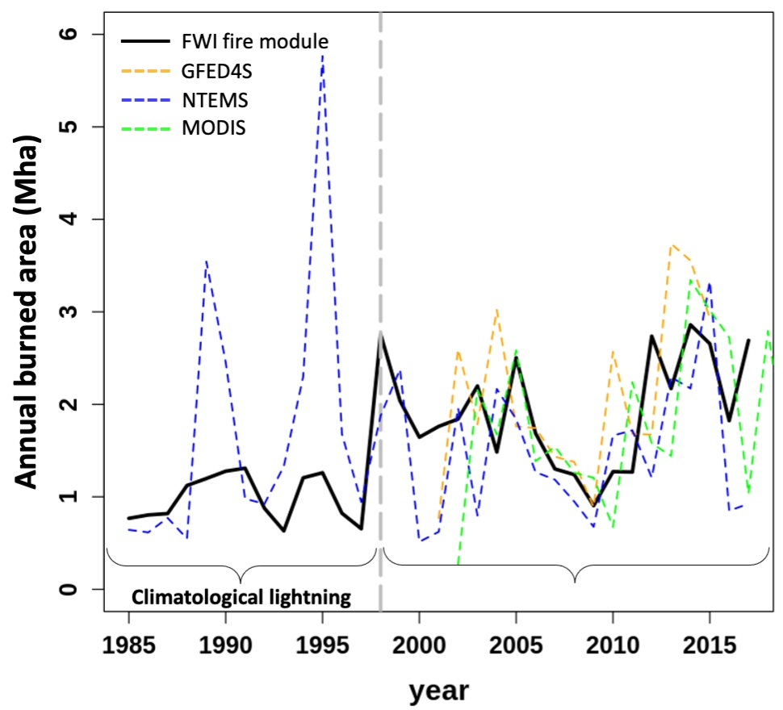
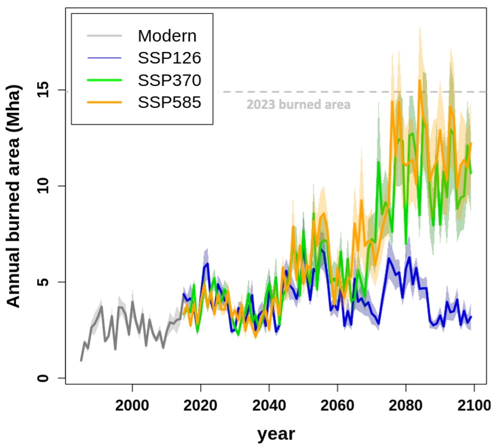

Wildfire & Canada's carbon cycle
This work has focused on advancing the representation of the Canadian carbon cycle in CLASSIC. This includes improving the representation of boreal vegetation cover, wildfire, timber harvest, and vegetation recovery post-disturbance. These processes are key to understanding the historical and future response of Canada's terrestrial carbon cycle to climate, disturbances, and evolving atmospheric greenhouse gas concentrations. This project resulted in the creation of a new boreal fire model in CLASSIC and some of the first projections of future Canada-wide burned area from a land surface model.

Evaluation of the new CLASSIC FWI fire model over the historical period

Projections of Canada-wide burned area using CLASSIC under several common SSPs